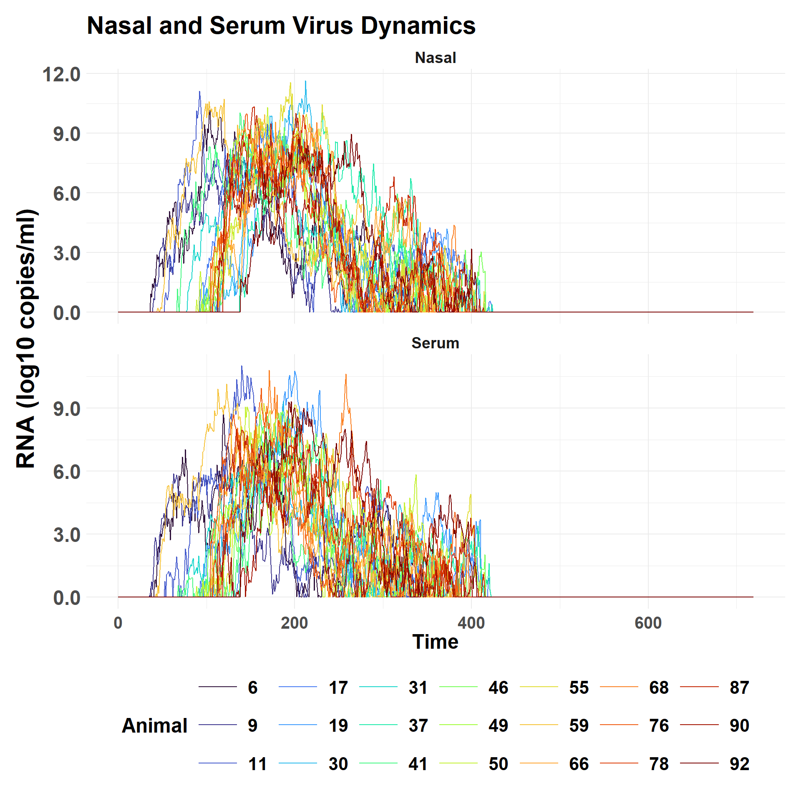
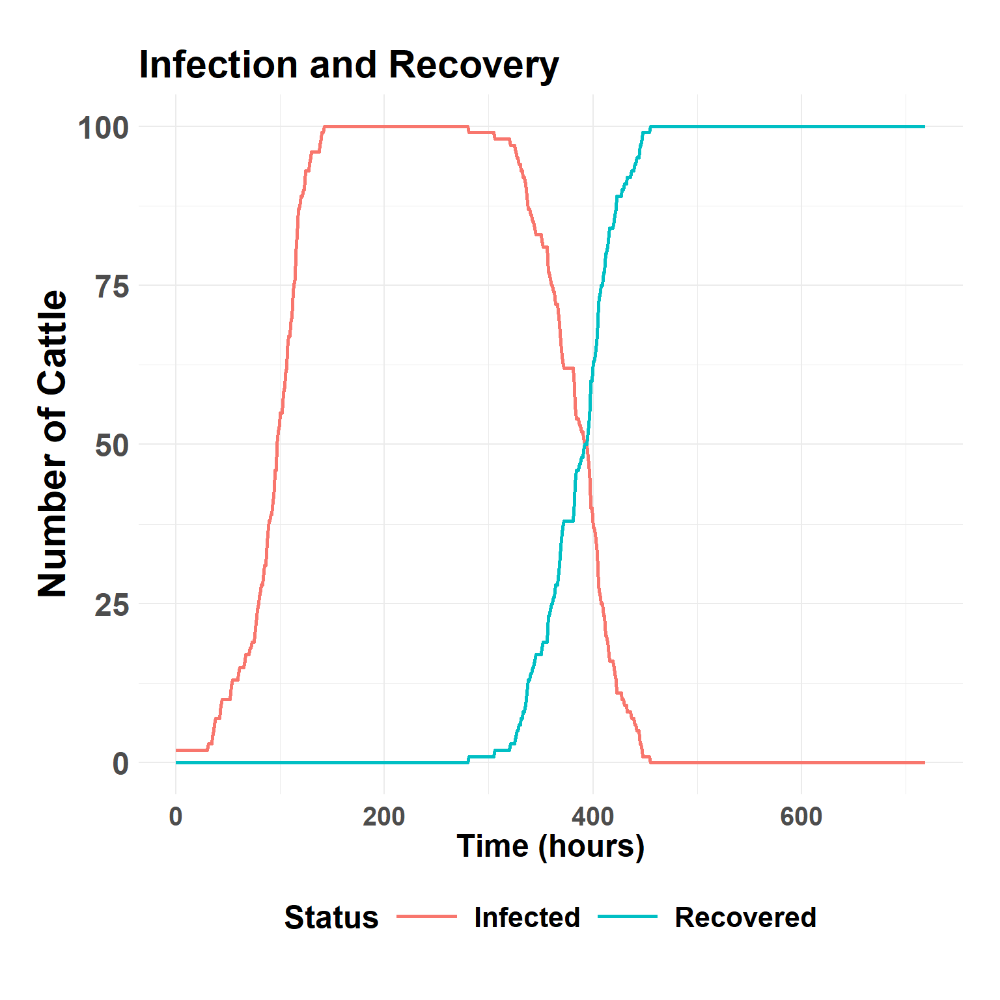

Within-Herd Transmission
Description
The challengeABM package includes the simulate_within_herd() function that is calibrated to exhibit the same within-host virus dynamics as the simulate_room_to_room() function uses for laboratory based animal experiments. At simulation start, cattle (agents) are populated to a common area with a specified number of FMDV infected individuals. On simulation hour 1, cattle begin making random contact with each other at a specified hourly rate to show homogeneous mixing.
Depending on the quantity of virus in the donor cattle and chance contacts, they may or may not infect others. The quantity of virus in nasal passages and in blood serum has been calibrated to match the experimental study described in the analysis with parameters recorded in the default_herd_config.yaml configuration file that is available with this script.
Registered PAT from the provided tokenchallengeABM Package
Simulation code is available here: challengeABM. The GitHub site includes an Overview, Design concepts, Details document.
Hide code
# library(remotes)
# remotes::install_github("geoepi/challengeABM")
library(challengeABM)Run the simulation
Set random seed for reproducible runs.
Hide code
seed_val <- round(runif(1, 100, 1000),0)
seed_val [1] 195Hide code
set.seed(seed_val)Run the simulation based using a configuration file with required parameters. Saving a copy for fast reloading of demo results.
Hide code
model_result <- simulate_within_herd(here("config/base_config_fmdv.yaml"),
num_donors = 2,
preclin_infect = TRUE,
contact_rate = 0.25,
seed = seed_val)
saveRDS(model_result, here("local/demo/model_result_herd_2025-06-13.rds"))Download saved copy from OSF
Hide code
osf_id <- osf_project_demo %>%
osf_ls_files() %>%
filter(name == "model_result_herd_2025-06-13.rds") # file to download
osf_download(osf_id,
path = here("local/temp"), # where to save
conflicts = "overwrite")| name | id | local_path | meta |
|---|---|---|---|
| model_result_herd_2025-06-13.rds | 684cc2c7559e9edbf0cc2c08 | local/temp/model_result_herd_2025-06-13.rds | model_result_herd_2025-06-13.rds , file , /684cc2c7559e9edbf0cc2c08 , 465971 , osfstorage , /model_result_herd_2025-06-13.rds , 1749861063 , 1749861063 , c8e7d13d7d139db24cd1ae834761c9e9 , fd1ffdfec2a6406130aada6808b7f46343654eb8f2951d0b8c78147ffd5b190b , 0 , TRUE , 1 , FALSE , https://api.osf.io/v2/files/684cc2c7559e9edbf0cc2c08/ , https://files.osf.io/v1/resources/qf2wr/providers/osfstorage/684cc2c7559e9edbf0cc2c08 , https://files.osf.io/v1/resources/qf2wr/providers/osfstorage/684cc2c7559e9edbf0cc2c08 , https://files.osf.io/v1/resources/qf2wr/providers/osfstorage/684cc2c7559e9edbf0cc2c08 , https://osf.io/download/684cc2c7559e9edbf0cc2c08/ , https://mfr.osf.io/render?url=https%3A%2F%2Fosf.io%2Fdownload%2F684cc2c7559e9edbf0cc2c08%2F%3Fdirect%26mode%3Drender, https://osf.io/qf2wr/files/osfstorage/684cc2c7559e9edbf0cc2c08 , https://api.osf.io/v2/files/684cc2c7559e9edbf0cc2c08/ , https://api.osf.io/v2/files/684cb2aed0a256104638874a/ , 684cb2aed0a256104638874a , files , https://api.osf.io/v2/files/684cc2c7559e9edbf0cc2c08/versions/ , https://api.osf.io/v2/nodes/qf2wr/ , qf2wr , nodes , https://api.osf.io/v2/nodes/qf2wr/ , nodes , nodes , qf2wr , https://api.osf.io/v2/files/684cc2c7559e9edbf0cc2c08/cedar_metadata_records/ |
Hide code
# read save file to environment
model_result <- readRDS(here("local/temp/model_result_herd_2025-06-13.rds"))Within-Host Dynamics
Randomly select 21 of 100 simulated animals to view nasal and virus quantities.
Hide code
plot_individual_virus_loads(model_result, sample_n = 21)
Herd Outbreak Curve
Compare the number of infected and recovered individuals.
Hide code
plot_herd_curve(model_result)